Library & tracking
Keep movies and TV together with progress-aware cards, quick watched actions and favorites.
WINDOWS v1.0.0 · ANDROID IN DEVELOPMENT

Keep movies and TV together. Track your progress, discover what to watch next, and explore the people and details behind every title.
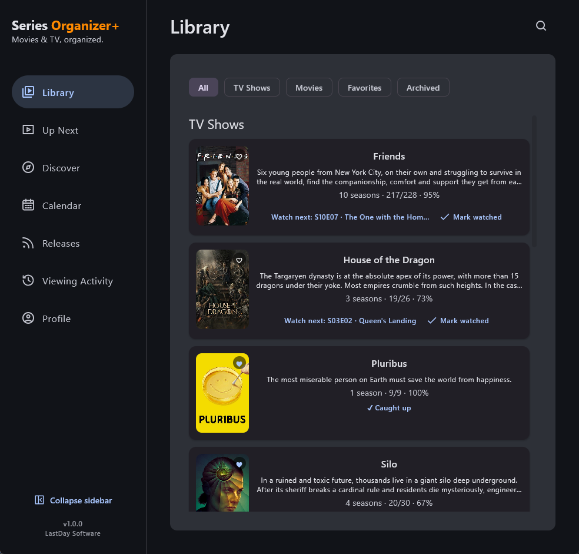
GET SERIES ORGANIZER+
Series Organizer+ v1.0.0 is available for Windows. Download the installer, build your library and pick up where you left off.
Android is still being prepared for a public release.
Windows installer (.msi)
File size: 86,458,306 bytes (82.45 MiB)
Download installerCC48E30A6E067F16CCCC7502A2789E121413B678158D85196C0583A93836F7E6This first installer is unsigned, so Windows may show an unknown-publisher warning. Download only from this official page.
THE NEXT GENERATION OF SERIES ORGANIZER
The original problem was simple: remember where the story stopped.
Series Organizer+ takes that idea much further with movies and TV together, rich title details, discovery, Up Next, calendar views, cast and artwork exploration, notifications, and optional cloud backup.
Familiar roots. A much bigger product.
WHAT SERIES ORGANIZER+ DOES BEST
The experience starts with tracking, but it quickly becomes a richer place to browse, revisit and explore everything around the titles you care about.
Keep movies and TV together with progress-aware cards, quick watched actions and favorites.
See what is ready to continue, what is waiting for the next episode and what deserves attention now.
Browse upcoming episodes and movie dates in a cleaner timeline-oriented view of your watch life.
Search, browse, filter and get personalized recommendations from what you already watch.
Explore people, credits, posters, backdrops, artwork and more around every title.
Stay local-first by default, with optional Google sign-in for manual backup and restore.
PLATFORMS
The Windows release brings Series Organizer+ back to its desktop roots. Android is still in development and is not publicly available yet.
Library tracking, discovery, people, media, notifications, calendar and Cloud Backup already come together here while the Android release continues to be prepared.
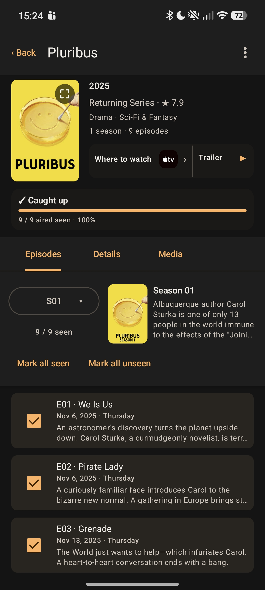
Version 1.0.0 brings your library, tracking and discovery into a desktop layout designed for everyday use.
DISCOVER
Browse what is popular or currently airing, narrow things down with advanced filters, or lean on recommendations shaped by your own Library.
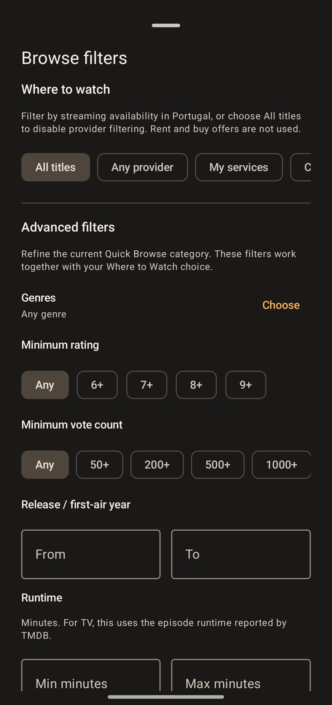
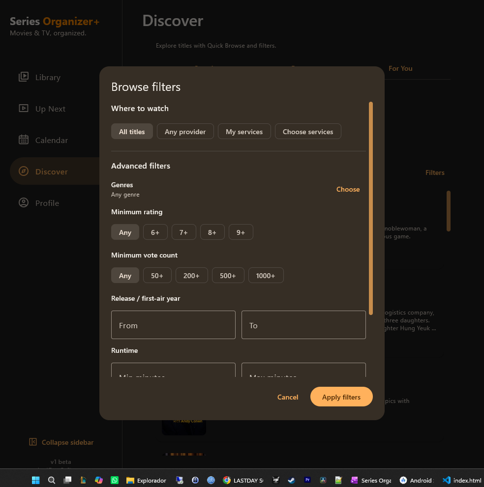
TIME & MOMENTUM
Whether you want a quick answer about what to continue next or a broader view of upcoming episodes and releases, Series Organizer+ keeps your watch life visible.
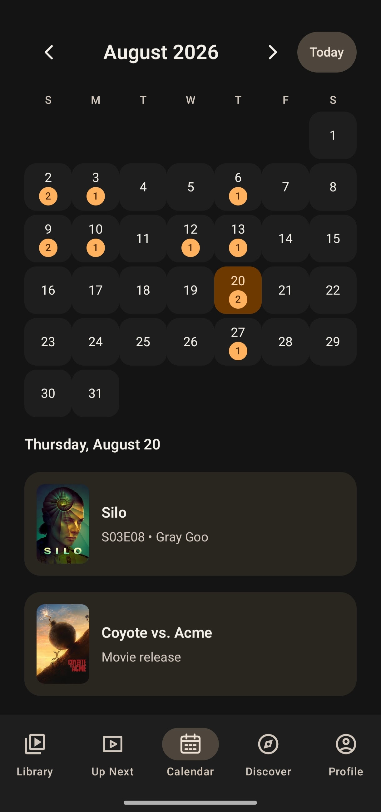
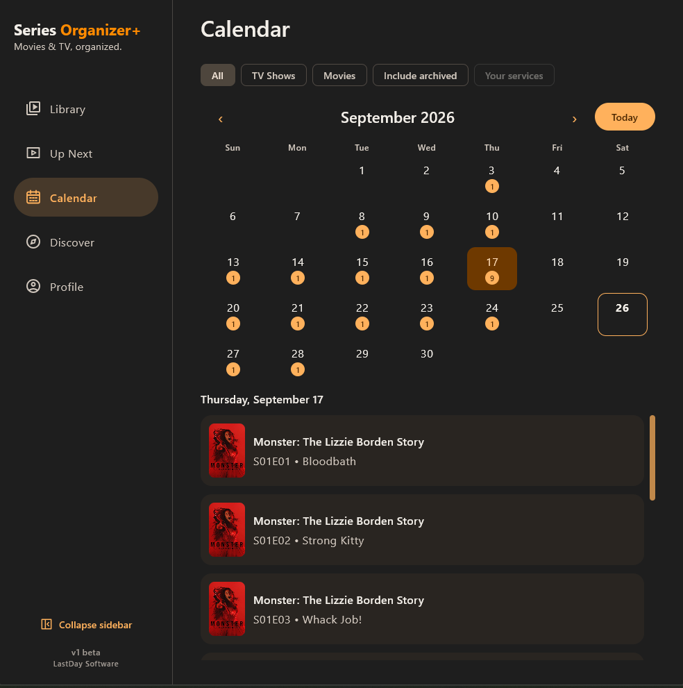
RICH DETAILS
Title details are meant to be a hub, not a dead end — with episodes, artwork, people and adjacent browsing all connected.
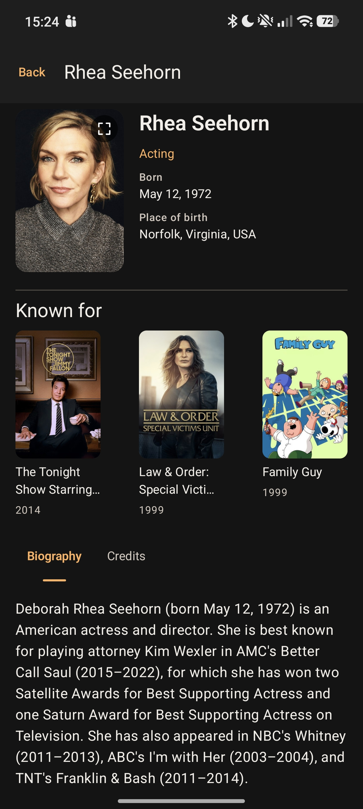
Move from a show to its cast, then onward into credits and related titles.
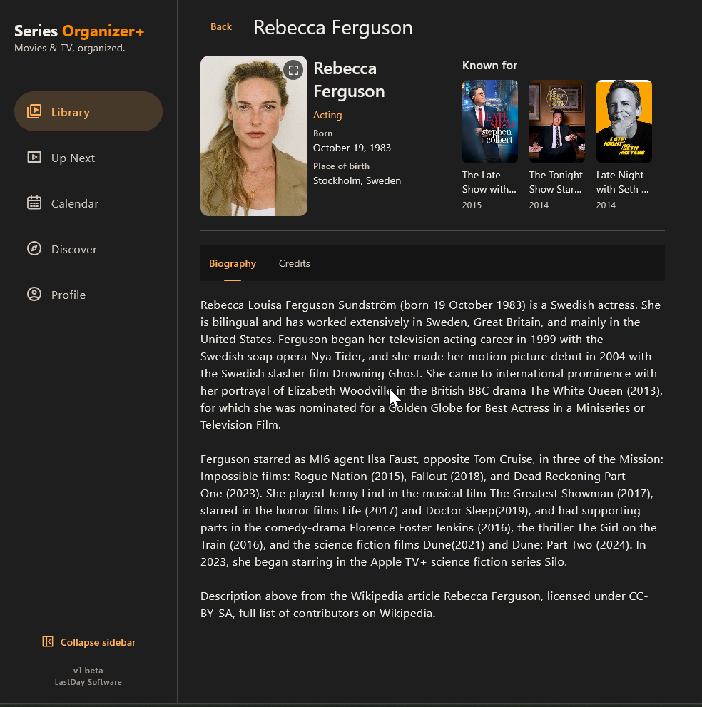
Browse cast biographies, credits and related titles from the Windows app.
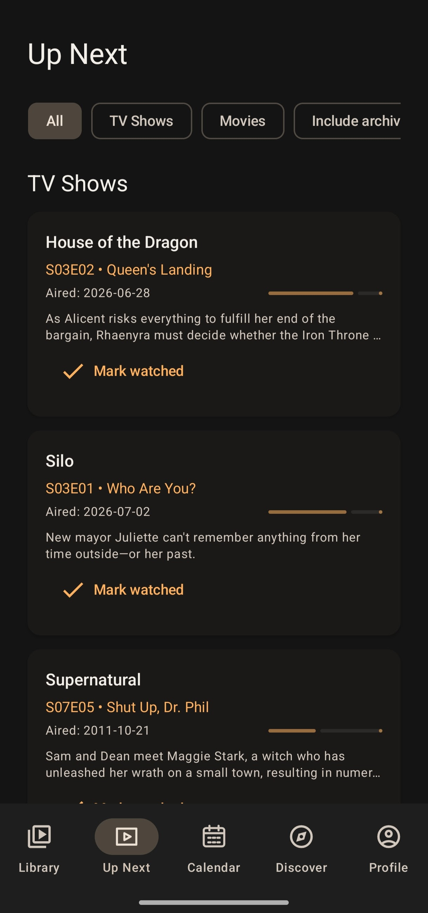
Know what is ready to resume and what is waiting for the next episode.
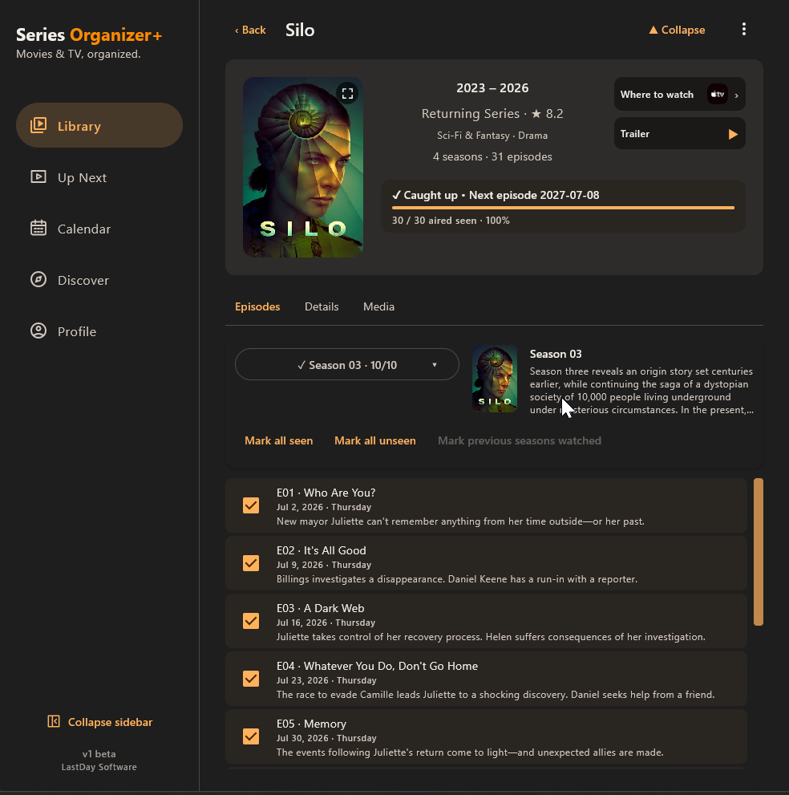
Season and episode navigation remain central to the whole Series Organizer idea.
YOUR DATA
Your Library lives on your device and remains available even when you're signed out or offline.
Optional Google sign-in lets you create manual cloud backups of your Library and tracking data, ready to restore when you need them.
Cloud Backup v1 is manual. Signing in does not automatically upload your Library, and cloud backup does not silently replace your local data.
THE SERIES ORGANIZER STORY
Long before Series Organizer+, the problem was wonderfully simple: the list of TV shows kept growing, and remembering the latest watched season and episode became harder and harder.
The first solution was little more than TVShows.txt. Then that text file turned into an application. And that application kept growing.
The first Series Organizer was intentionally simple: shows, seasons, episodes and a way to remember where you had stopped.
It wasn't pretty. It didn't need to be. It solved the problem.

The second generation moved beyond the spreadsheet-like beginnings. A proper toolbar, visual controls, themes and more options began shaping the personality of the application.

Series Organizer began pulling in richer information: episodes, air dates, descriptions, artwork and online metadata.
It was no longer only about remembering a number. The tracker was becoming a place to explore the shows themselves.

Dark surfaces, artwork, actors, episode information and orange highlights became part of the Series Organizer identity.
The project had grown from a tracker into a much richer desktop companion for television.

Series Organizer 5 brought together tracking, artwork, cast information, discovery tools, RSS, subtitles and years of experimentation.
Then development stopped.
The idea didn't.

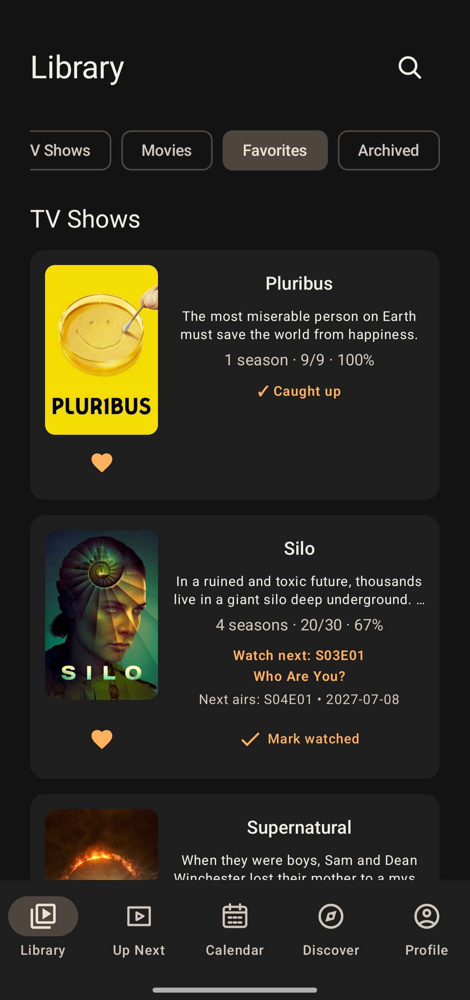
Years later, Series Organizer returns — rebuilt from the ground up for movies, TV, modern platforms and a much bigger vision.
WHAT'S NEXT
The first Windows release is here. Android is still on its way, and both experiences will keep improving.